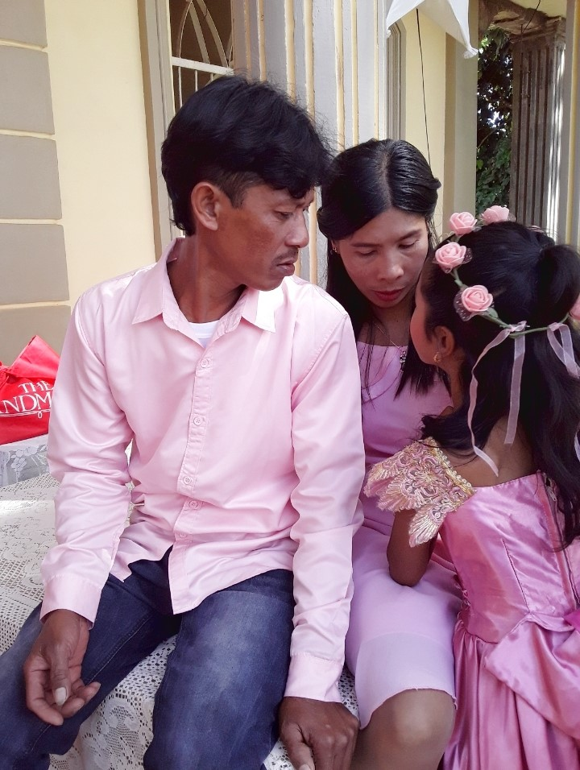
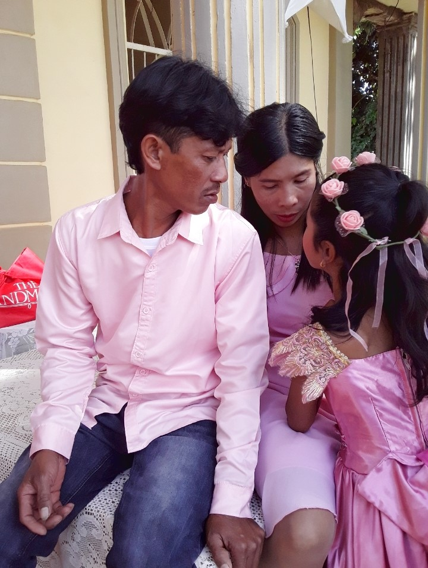
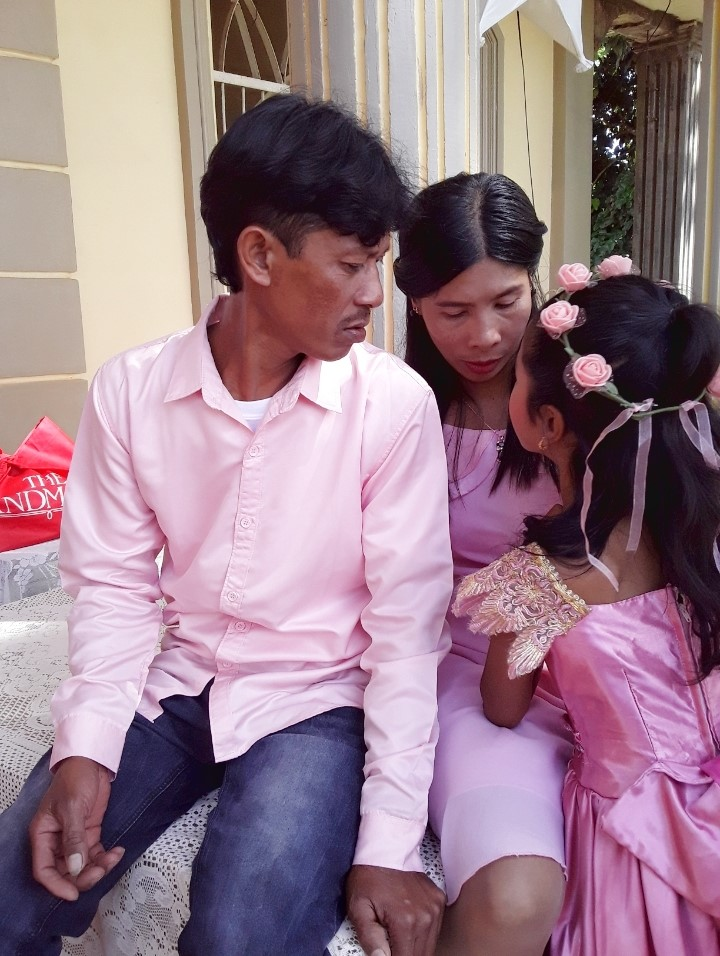
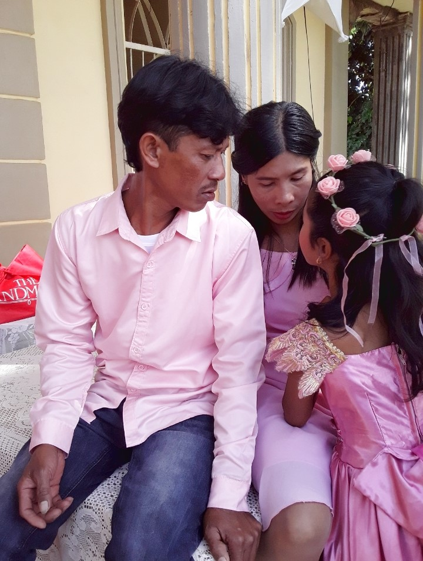

 

I am incredibly blessed to have such amazing parents who support me in everything I do. They are truly wonderful, and I take great pride in having them as my parents. My friends also play a significant role in making my high school years memorable. Despite our playful insults, the laughter we share and the cutting classes we've had together are moments that will forever be etched in my memory. My comforting cat has been a loyal companion, always by my side through ups and downs. The feel of his fur brings me comfort, and he's a patient listener to all the dramas in my life. Moreover, I feel truly blessed because God has given me a best friend who understands me like no one else can. She has been my partner in crime since elementary school, and our friendship, spanning almost 12 years, is still going strong. She's the one friend who truly comprehends me, cheers me up, and has been a constant in my life. I am grateful for these incredible blessings that make my life richer and more meaningful. Lastly, I am immensely proud of myself because I have come a long way. I want to take a moment to flex my achievements,though they may seem small, to me, they are significant milestones that I am proud of. Every accomplishment, no matter how seemingly minor, is a testament to my hard work and perseverance. These achievements, however small, contribute to the overall journey of personal growth and success. I celebrate these victories, acknowledging that each one is a stepping stone to even greater accomplishments in the future.